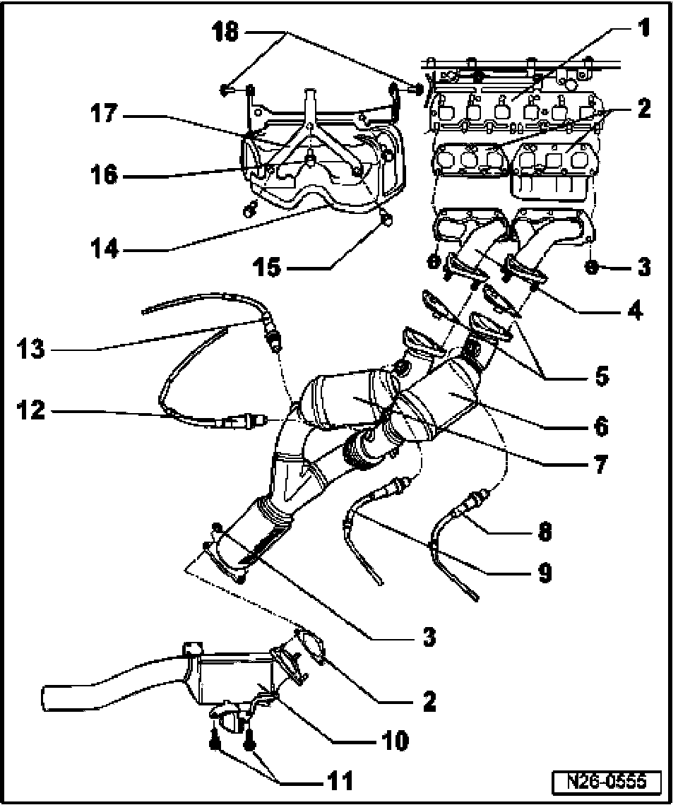

Exhaust Manifold, Catalytic Converter with Front Pipe Attachments
Exhaust Manifold, Primary Catalytic Converters, Catalytic Converter And Attachments

1 Cylinder head
2 Gasket
- Always replace
3 Hex nut
- M8 = 25 Nm
- M10 = 40 Nm
4 Exhaust manifold
- Removing and installing exhaust manifold and primary catalytic converters
5 Gasket
- Alignment tabs point downward
- Always replace
6 Primary catalytic converter
- Installed in exhaust gas stream of cylinders 1, 2 and 3
- Removing and installing exhaust manifold and primary catalytic converters
7 Primary catalytic converter
- Installed in exhaust gas stream of cylinders 4, 5 and 6
- Removing and installing exhaust manifold and primary catalytic converters
8 Heated Oxygen Sensor (HO2S) -G39- bank 1*, 50 Nm
- Installed in exhaust gas stream of cylinders 1, 2 and 3
- Component location of harness connector, See Fig. 1
- Only grease threads with G 052 112 A3 locking compound, do NOT allow locking compound to get into slots on sensor body
- Check oxygen sensor heater for oxygen sensors before Three Way Catalytic Converter (TWC)
- Check Oxygen Sensors (O2S) and oxygen sensor control before Three Way Catalytic Converter (TWC)
9 Heated Oxygen Sensor (HO2S) 2 -G108-*, 50 Nm
- Installed in exhaust gas stream of cylinders 4, 5 and 6
- Component location of harness connector, See Fig. 1
- Only grease threads with G 052 112 A3 locking compound, do NOT allow locking compound to get into slots on sensor body
- Check oxygen sensor heater for oxygen sensors before Three Way Catalytic Converter (TWC)
- Check Oxygen Sensors (O2S) and oxygen sensor control before Three Way Catalytic Converter (TWC)
10 Catalytic converter
11 25 Nm
12 Oxygen Sensor (O2S) Behind Three Way Catalytic Converter (TWC) -G130- bank 1*, 50 Nm
- Installed in exhaust gas stream of cylinders 1, 2 and 3
- Component location of harness connector, See Fig. 1
- Only grease threads with G 052 112 A3 locking compound, do NOT allow locking compound to get into slots on sensor body
- Check oxygen sensor heater for Oxygen Sensors (O2S) behind Three Way Catalytic Converter (TWC)
- Check Oxygen Sensors (O2S) and oxygen sensor control behind Three Way Catalytic Converter (TWC)
13 Oxygen Sensor (O2S) Behind Three Way Catalytic Converter (TWC) -G131- bank 2*, 50 Nm
- Installed in exhaust gas stream of cylinders 4, 5 and 6
- Component location of harness connector, see Fig. 1
- Only grease threads with G 052 112 A3 locking compound, do NOT allow locking compound to get into slots on sensor body
- Check oxygen sensor heater for Oxygen Sensors (O2S) behind Three Way Catalytic Converter (TWC)
- Check Oxygen Sensors (O2S) and oxygen sensor control behind Three Way Catalytic Converter (TWC)
14 Heat shield
- With intake manifold support
15 23 Nm
16 20 Nm
17 Bracket
18 23 Nm
Fig. 1 Component location of oxygen sensors, harness connectors

- Heated Oxygen Sensor (HO2S) -G39-, bank 1, 6-pin harness connector -1-,
- Oxygen Sensor (O2S) Behind Three Way Catalytic Converter (TWC) -G130-, bank 1, 4-pin harness connector -2-,
- Oxygen Sensor (O2S) Behind Three Way Catalytic Converter (TWC) -G131-, bank 2, 4-pin harness connector -3-,
- Heated Oxygen Sensor (HO2S) 2 -G108-, bank 2, 6-pin harness connector -4-.